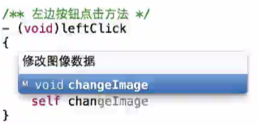
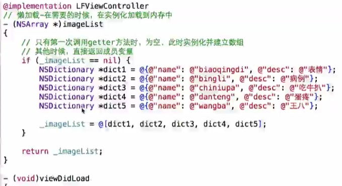
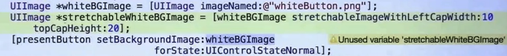

test
黑马iOS笔记
- 注释的用途——创建方法名
在方法明上方可用
/** 方法名 */的格式，这样创建的方法便会有中文方法名提示。如：
/** 创建表格 */
-(void)createtable{
};
如下图

- 改代码之前先把旧的注释掉，改完无误再删除。
- 定义属性的时候，带
*号的是地址，不是strong就是weak；没*号的比如int类型，就用assign。 - 懒加载

GeekBand（二）iOS应用开发实战
第二周
MVC 模式
C 属于 M 和 V 之间的桥梁作用。V 和 M 一般没有直接联系，不直接进行通信。
创建导航条、底栏和底栏的按钮的逻辑
- 实例化一个 viewController
- 实例化一个 navigationController，并用上面的 viewController 把它初始化
- 为 navigationController设置标题、图标
- 重复以上步骤得到足够的数量后
- 实例化一个 tabBarController
- tabBarController 其实是一个数组，往数组里填上以上 navigationController
- 设定该 window 的 rootViewController 为该 tabBarController
善用父类去统一设置不同 viewController 里一样的对象
比如说5个 viewController 都需要背景图，可以创建一个 baseViewController，里面写上统一的背景图的设置。然后让这些不同的 viewController 都继承自这个 baseViewController，再分别在这些 viewController 里写入不同参数即可——子类可直接调用父类的属性，需要注意的是，父类的属性必须写在.h文件里。
比较好的拉伸图片的方法
- 先对旧图创建一个 UIImage
- 再创建一个新的 UIImage，对旧图用类方法
[oldImage stretchableImageWithLeftCapWidth:10 topCapHeight:10]处理 - 在需要用的地方放入新图即可 
为了不被诸多的 tag 搞乱
可以把 tag 定义成宏，比如 #define kPushButtonTag 100
GeekBand（一）OC 高级编程
do 循环：
一直做某件事情，直到某个条件不成立
continue：
跳过本次循环，进入下一次；而 break 则是跳出整个循环
条件运算符：

这张图的意思是当age 大于等于18时，test的值为9，否则为10。上方的条件运算符完全等价于下方的if-else表达式
限定词：
nonatomic,atomic——原子的，同一时间只允许有一个线程访问，如果同时有多个线程/任务访问，那就要排队，会影响程序效率。所以一般会用「非原子的nonatomic」，但相对而言，它的安全性会比atomic低。copy——会复制一份出来，不会影响到原有的数据retain——会导致对象的引用计数加 1strong,weak——4.0之后才出现的，强引用和弱引用。strong等价于retain，weak等价于assign，不过weak只能用在对象性数据上assign——一般用于修饰基本数据类型，比如 int，float 等无需星号的数据类型readonly——只读，无法修改